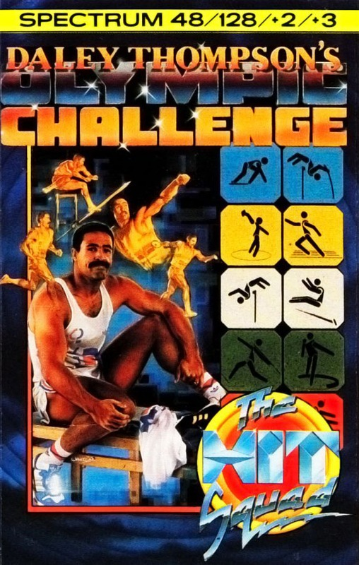
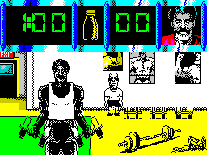
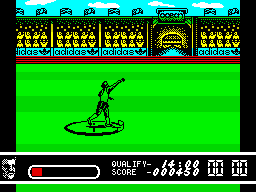
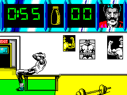

Daley Thompson's Olympic Challenge


{kind=link}

| Publisher: | Ocean |
| Price: | £9.95 Cass, 12.95 Disk |
| Year: | 1988 |
| Source: | CRASH, Issue 58 |

It’s a sad, but sure fact that age catches up with you. Even Daley Thompson’s no exception. Why I remember our hero in Daley Thompson’s Decathalon when he could qualify in all the events without hardly breaking a sweat. Okay, the 400 metres put a bit of strain on the old joystick, but mostly it was a case of timing and skill. Four years later I’m afraid Daley can hardly do a thing without a titanic effort on the joystick. The old muscles just aren’t what they were and the player (that’s YOU!) has to compensate. But if getting the gold seems a difficult enough task now, be warned Ocean want even more. To promote their software they want Daley to win over 9000 points in the Olympic Decathlon — smashing the world record.

on
To get you in shape for this daunting challenge Ocean have thoughtfully provide a training session. Simply put, this consists of filling a bottle with a yellow liquid — no it’s not a drug test, but a strength test. Each of the three training events gives the player a minute to try and fill a Lucozade bottle by frantic joystick waggling. While graphically quite distinct, each event — dumb-bells, sit-ups and squats — is identical in play: non-stop joystick destruction. At the end of the training session, a percentage is awarded which will contribute to your efforts in the game itself. (Day One and Day Two events are separate loads for 48K owners, 128K owners get it all in one load.)
Once you enter the Olympics you quickly discover the perils of fashion in sports. Prior to each event Daley must pick the trainer which looks most fetching for the sport. If he picks incorrectly, well then he just doesn’t feel quite right and his performance suffers. Fortunately, however, critics respond to this fashion gaffe by revealing the correct shoe — which is always the same, so after one game your fashion worries are over. (That’s a relief — Ed.)

didn’t win the Gold Medal, you’re not
trying!
Much as in the original game Daley has three lives to see him through to the final event. Should he fail to qualify in an event then a life is lost — lose all three and the game is over. On the first day the events are 100 metres, Long Jump, Shot Putt, High Jump and 400 metres. The following day brings such delights as 110 metres Hurdles, Discus, Pole Vault, Javelin and 1500 metres. (Cor, I’m all out of puff just saying them!) Success in any of these rests mostly on sweaty joystick-waggling. For the 100m and the 400m it’s all that’s required; while the High Jump, Shot Putt, Discus and Hurdles demand in addition only the judicious press of the fire button. The Long Jump and Javelin use fire to set the relevant angle while the Pole Vault needs TWO fire button presses (tiring). After blistering your hands with all that, be grateful that once power has been built up for the 1500m then only a small amount of waggling is needed to keep going.
In terms of presentation Daley Thompson’s Olympic Challenge is generally first-rate with some superb animation of the Decathlon superstar. There’s even some amusing comic touches in the training session when a weedy little guy (the trainer) shuffles round in the background feebly failing to pick up even the smallest dumb-bells. Unfortunately more useful graphics, such as an indicator of how much track is left to run, are absent. Gameplay is generally a lot tougher than not only the preceding games, but also any other game of this type. Rather than coordination or timing the key to this game is sheer brute force and endurance. For fans, this game is a real challenge and likely to be a big hit.
STUART ... 89%
DALEY CHEATS
- You must work out which trainers to use on which event, but if you can’t be bothered — look in this month’s Playing Tips!
- As always, in the javelin you should try to for an angle of 45°.
- Get yourself a good joystick now! Otherwise you’re going to end up with microswitches and bits of wire all over your computer!
- On the discus, press fire just after Daley begins to throw, you always seem to qualify then.
- On the high jump try to get the power as near to 100% each attempt, you can’t fail to qualify then.
- Have a nice hot bath ready for your aching limbs at the end of it all!

Cor! I’ve played some joystick waggling games in my time but this beats them all. Every single event requires you to move your joystick left/right non-stop for what seems like hours. But never mind all the aching arms and cramp, there’s a good game underneath it all with some splendid graphics. On the sound front there’s the usual running effects and a reasonable tune on the 128K. In addition there’s a free music tape (hardly making the NR Disco Sounds charts) and a giant poster, but the game’s the most important thing and it makes the real Decathlon seem easy.
NICK ... 92%
Well something just snapped, maybe it was the joystick. Daley Thompson’s Olympic Challenge is the latest in a long line of gruelling sports simulation games, and probably the toughest. To urge you on with the frantic joystick-mangling there are superb graphics with adequate sound effects. I have little doubt that this will do as well in the software charts as Daley invariably does at the Decathlon. Another gold medal winner from Ocean.
MARK ... 91%
THE ESSENTIALS
| Joysticks: | Cursor, Kempston, Sinclair |
| Graphics: | Our favourite decathlete is excellently animated with some great backdrops |
| Sound: | Great Jonathon Dunn title tune and tunelets between events, plus a separate audio tape |
| Options: | Definable keys. Training option to improve Daley’s fitness level |
| General rating: | As long as your arm doesn’t fall off, this should keep you waggling long after the Olympics have finished |
| Presentation: | 89% |
| Graphics: | 89% |
| Playability: | 92% |
| Addictive qualities: | 90% |
| Overall: | 91% |